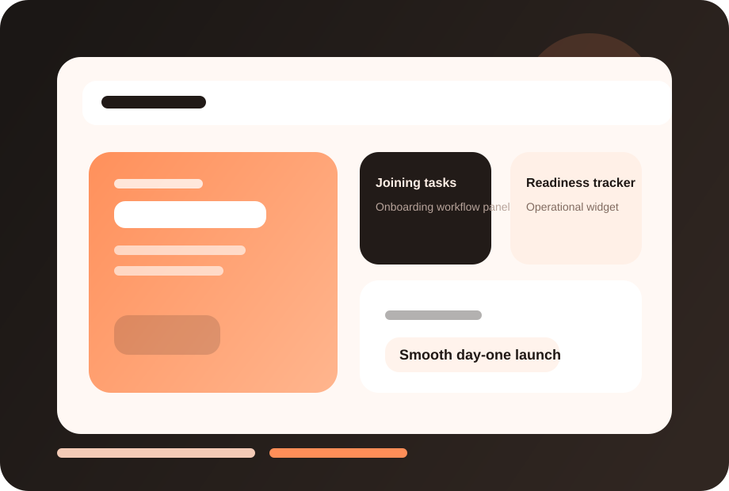

Faster readiness
Coordinate internal teams so the employee can contribute sooner.
FuzionHR Onboarding helps businesses create structured joining experiences with document readiness, internal coordination and better accountability.

This page now has a dedicated visual treatment, stronger readability, and screenshot-ready product areas so you can drop in actual FuzionHR UI captures later.
Clearer module identity and stronger visual recognition.
Dedicated screenshot frames for real product views.
Structure remains intact while the design feels richer.
Coordinate internal teams so the employee can contribute sooner.
Deliver a more organized, confident and professional joining experience.
Replace scattered reminders with accountable workflow tracking.
These screenshot frames are placeholders for your actual product UI. Once you share real captures, we can place them here with polished annotations.
Replace this frame with your real product screenshot to show the live FuzionHR UI.
Use this area for dashboards, approvals, reports or employee-facing views.